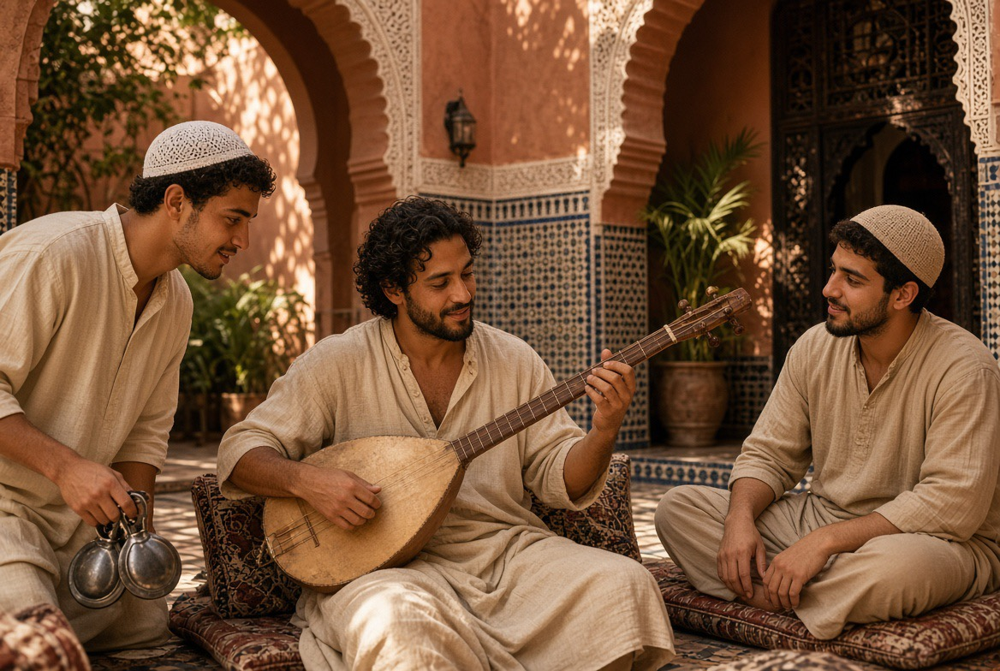

Musique & chant
Quatre disciplines du son, du geste et de la parole — jamais un spectacle, toujours une transmission.

UNE TRADITION EXILÉE
Al-Âla — la musique andalouse
La musique andalouse (al-âla) trouve ses racines dans les cours d'al-Andalus. Après 1492, les musiciens s'exilent vers Fès, Tétouan, Rabat.
La nouba est une suite musicale longue, organisée en mouvements de tempo croissant. Onze nouba subsistent.
DISCIPLINE DU CORPS
Tahtib — l'art du bâton

Né dans l'Égypte ancienne et vivant encore en Haute-Égypte, le tahtib n'est pas un combat mais un dialogue : deux hommes, deux bâtons, un rythme de tambour.
À Dar al-Hiraf : non comme attraction, mais comme pratique du courage mesuré.
Le bâton utilisé, appelé ʿasa ou nabboud, mesure généralement 1,20 à 1,50 mètre — assez long pour exiger une gestion précise de la distance, trop léger pour blesser gravement s'il est manié avec justesse. Le duel se joue sur un rythme de tambour (tabla baladi) qui accélère par paliers. Le vainqueur n'est pas celui qui frappe fort, mais celui qui touche sans jamais perdre la mesure.
DISCIPLINE DU VERBE CHANTÉ
Malhun — la parole qui se transmet

Né dans les villes du Maroc et reconnu par l'UNESCO en 2023, le malhun est un art de la parole rythmée, lié aux corporations artisanales. Un shaykh al-malhun transmet un répertoire à quelques disciples.
Cette filiation avec le monde de l'atelier en fait l'une des transmissions les plus naturelles de Dar al-Hiraf.
Le répertoire se construit en qasida — poèmes longs, chantés a cappella puis repris par un petit ensemble (violon, ʿūd, percussions). Les thèmes varient de l'amour mystique à l'éloge du Prophète, en passant par des évocations du monde artisanal. Parmi les grands noms : Sidi Qaddour al-ʿAlami (XVIIIe siècle), toujours chanté à Fès et Meknès.
DISCIPLINE DU SON
Gnawa — la transmission du maâlem

Porté par le guembri et les qraqeb, le gnawa est une musique de transmission. Le maître porte le titre de maâlem — le même mot que celui du maître artisan.
Un seul système de transmission, appliqué tantôt à la pierre, tantôt au bois, tantôt au son.
La cérémonie complète, appelée lila (« la nuit »), peut durer une nuit entière : elle associe à chaque couleur de tissu, à chaque rythme du guembri, une entité spirituelle précise. Le maâlem conduit la nuit entière, sait quand ralentir, quand relancer, quand clore.